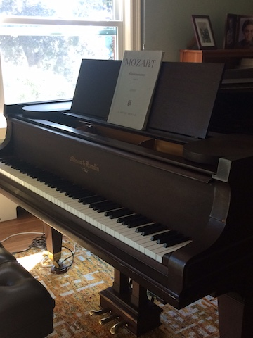

My First and Third Instrument: The Piano
I first studied piano as a young child for the usual reason:
my mother made me, taking lessons from my great aunt Bertha.
My grandfather had worked as a piano technician and the family
owned two pianos made by Vose Piano. Bertha had both of these
pianos, allowing us to grow up playing not only duets but
duets of four hands on two pianos and sometimes even eight
hands on two pianos!.
After 5 years of piano, I switched
to the clarinet for the
remainder of my school years, but following college I became
interested in piano again and signed up for 4 more years of
lessons, this time from Gregory Slowik through the Longy
School of Music.